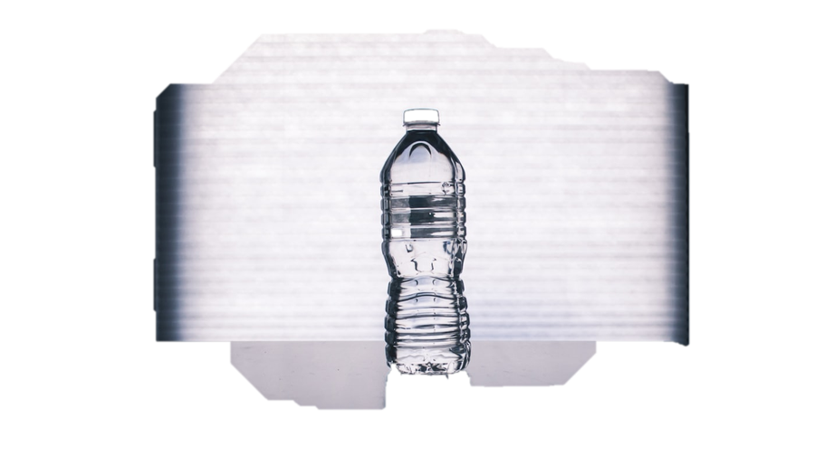

Product Story

Kyoto Morning Mug
A cup designed for the first quiet 10 minutes of your day.
Naomi sketched this mug after noticing how people hold warmth before they hold intention. The subtle thumb rest and gentle lip were shaped for that exact morning pause—tea, coffee, or just a breath in your hands.
Ritual Notes
Best used with a slow pour and a window nearby. This piece is about softness, not speed.
Mock price: $42